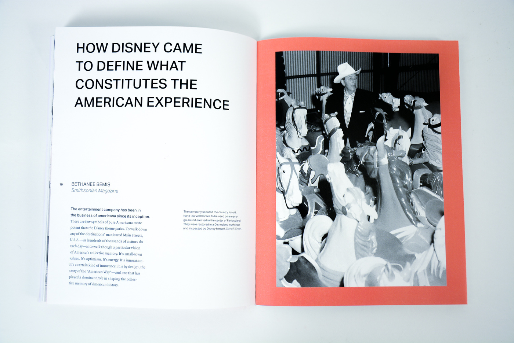

Aktiv Grotesk is a sans-serif font designed by the typeface design studio Dalton Maag. Swiss type designer Bruno Maag wanted to create a font that acted as an alternative to Helvetica as he considered it overused and lacking in various aspects. He would eventually release Aktiv Grotesk in 2010, a font that some described as the "Helvetica killer." The font separated itself from the quirks of Helvetica while sporting personality, creating a versatile typeface that works for both digital and print applications.
Acumin
Acumin is a sans-serif font designed by renowned type designer Robert Slimbach. Its design is Slimbach's take on the neo-grotesque category: a style of typography that has been present for over a century best represented by Helvetica and Univers. He intended Acumin to not be just an iteration of the neo-grotesque style, but rather its own identity as a neo-grotesque typeface. Acumin would eventually be published through Adobe in 2015 with many praises to its design and readability, even being descibed as "Helvetica for readers" by designer Jeffrey Zeldman.
Comparison
Similarities
Characters from Aktiv Grotesk and Acumin omit decorative elements, sticking to a clean look lacking flourishes that fits well for body text.The counters in characters are very similar in shape, mainly differeng in just their size.Both fonts have a neutral grotesque shape that make them both applicable to many projects with their modern look. Characters with vertical descenders/ascenders are consistent and straight for both fontsThe dots from both characters are similar in their rectangular shape despite differences in sizeUppercase characters for Aktiv Grotesk are quite similar in shape despite the very slight difference in height.
Differences
Tips of characters are more angled for Aktiv Grotesk, while tails for Acumin are more curved.Elements of some uppercase characters differ greatly between both fonts. The period and dots in the question and exclamation marks are slightly taller and thinner for Acumin.Some numbers in Acumin are curved or angled in certain areas while Aktiv Grotesk is more uniform.Commas and similar slanted marks like the ones that appear in semicolons and quotation marks are more curved for Acumin.Overall, the lines of Acumin's characters are thicker than those of Aktiv Grotesk.
Examples and visual references
Aktiv Grotesk

Aktiv Grotesk is used for body text throughout "Disneyland: Animating American Ideals", a book that goes over the influence Disneyland has on America.In-game text and promotional material for survival horror video game "Alan Wake 2" makes use of Aktiv Grotesk and Aktiv Grotesk Extended.Aktiv Grotesk is used as body text in the website for high-end photography licensing brand "Stills."
Acumin
The promotional website created for Illumination's "The Super Mario Bros. Movie" uses Acumin for its body text and for the stickers and graphics that appear on the site.To celebrate Chicago Design Week 2018, design agency "One Design" developed a campaign that involved creating a website and printed promotional pieces that experimented with how Acumin could be displayed with the theme "Design in Motion."Acumin appears throughout the graphic designof the band EABS's album art. The album "Discipline of Sun Ra" portrays a minimalistic style through its use of Acumin and Asfen to further emphasize its avante-garde themes found in the music.